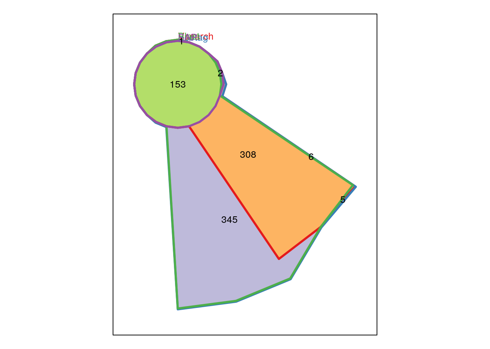

Evaluation of Taxonomic Assignment Packages V3
Evan Krell, Chris Bird, Martin French
December 1, 2016
Database used
The database used for taxonomic assignment is the pre-built nucleotide BLAST database from NCBI.
https://blast.ncbi.nlm.nih.gov/Blast.cgi?CMD=Web&PAGE_TYPE=BlastDocs&DOC_TYPE=Download
Filter options were used to reduce the database to only mitochondrial DNA. An entrez query was made to download the GI numbers for those sequences, with the the following command:
wget 'https://eutils.ncbi.nlm.nih.gov/entrez/eutils/esearch.fcgi?db=nuccore&term=mitochondria or cytochrome \\
or coi or co1 or cox1 or coxi or "mitochondrial genome" or "mitochondria genome"&retmax=4933739'Sources of taxonomic assignment
Vsearch
https://github.com/torognes/vsearch
Command used:
vsearch --db ../nr_mito.fasta --id .7 \\
--userout OTU.vsearched.userout --usearch_global \\
/media/Wapuilani/evan/Charybdis_Runs/Combined/out/Simons.combo.nonchimeras.clean.OTU.cluster.fastaEcotag
http://metabarcoding.org/obitools/doc/scripts/ecotag.html
Command used:
ecotag -R /media/Wapuilani/Databases/FILTER_BLASTDB/ecopcrdb/db_clean_uniq_valid.fasta -m .7 \\
-t /media/Wapuilani/Databases/NCBI_TAXO \\
-r /media/Wapuilani/evan/Charybdis_Runs/Combined/out/Simons.combo.nonchimeras.clean.OTU.cluster.fastaBlast
https://blast.ncbi.nlm.nih.gov/Blast.cgi
Command used:
blastn -query /media/Wapuilani/evan/Charybdis_Runs/Combined/out/Simons.combo.nonchimeras.clean.OTU.cluster.fasta \\
-db ./nr_mito > Simons_NDB.blast.csvSAP
https://github.com/kaspermunch/sap
Command used:
sap --project Simons8 --database /media/Wapuilani/Databases/FILTER_DB/nr_mito.SAP.fix.fasta \
/media/Wapualani/evan/Charybdis/Simons/combo/out/Simons....fastaLoad and prepare data
In this section, the data sources are loaded and processed in various ways to get them ready for evaluation. Care is taken to make sure that all data are as consistent as possible. By using a common database, all taxonomic assignment software use the same GI numbers to identify the assigned reference sequences.
Filter singletons
In order to reduce amount of junk assignments, remove based on the following criteria:
- Singleton (type 1): The read count across all samples is 1
- Singleton (type 2): The read count in any single sample is never > 1
- Singleton (type 3): The read count in any single sample is never greater than 1% of total count across all samples
Need to print this info
| Vsearch | Ecotag | Blast | SAP | |
|---|---|---|---|---|
| Singletons (type 1) | 2054 | 4393 | 4382 | 91 |
| Singletons (type 2) | 225 | 341 | 340 | 17 |
| Singletons (type 3) | 0 | 0 | 0 | 0 |
| Total Filtered OTUs | 2279 | 4734 | 4722 | 108 |
| Remaining OTUs | 469 | 819 | 807 | 155 |
Overview
The following table compares the number of OTUs present in the data produced for each method of taxonomic assignment.
In addition, the table shows the number of unique reference assignments for each assignment method, as well as the intersection of all three: the number of OTUs that were assigned to the same reference sequence.
| Vsearch | Ecotag | Blast | SAP | |
|---|---|---|---|---|
| Number of Assigned OTUs | 2749 | 5587 | 5584 | 155 |
| Total OTUs | 5636 | 5636 | 5636 | 5636 |
| Percent Assigned OTUs | 48.7757275 | 99.1305891 | 99.0773598 | 2.7501774 |
| Unique Reference Sequences | 285 | 578 | 632 | NA |
| Intersection of Unique Reference Sequences | 17 | 17 | 17 | NA |
| Percent References Sequences Shared | 5.9649123 | 2.9411765 | 2.6898734 | NA |
## [1] "Intersection of Assigned OTUs"
| Intersection | Number of Assigned OTUs |
|---|---|
| Ecotag, Vsearch | 468 |
| Ecotag, Blast | 52 |
| Ecotag, SAP | 155 |
| Vsearch, Blast | 462 |
| Vsearch, SAP | 155 |
| Blast, SAP | 153 |
| Ecotag, Vsearch, Blast | 461 |
| Ecotag, Vsearch, SAP | 155 |
| Vsearch, Blast, SAP | 153 |
| Ecotag, Vsearch, Blast, SAP | 153 |
Investigate phylogenetic levels of taxonomic assingment of OTUs
The following table shows, for each phylogenetic level, the number of OTU assignments where that level was the lowest assignment. This table may also reveal issues where there is not lowest. This could be some kind of error with the assignment, or a behavior of the assignment package. For example, ecotag keeps all data in the results. The sequences that it cannot assign, it assigns to the “root” of the phylogenetic tree.
## SAP complete
taxonomicRanksOfInterest <- c ("species", "genus", "family", "order", "class", "phylum", "kingdom")
# Vsearch
vsearch_taxonomy <- ovt_vsearch[,taxonomicRanksOfInterest]
vsearch_best_match_scinames <- apply(vsearch_taxonomy, 1, function(x) head(x[x != ""], 1))
vsearch_best_match_scinames <- unlist (lapply(X = vsearch_best_match_scinames,
function (x) ifelse(length(x) == 0, "", x[1])))
vsearch_best_match_levels <- apply(vsearch_taxonomy, 1, function(x) names(head(x[x != ""], 1)))
vsearch_best_match_levels <- unlist (lapply(X = vsearch_best_match_levels,
function (x) ifelse(length(x) == 0, "", x[1])))
vsearch_best_match <- cbind.data.frame (ovt_vsearch$OTU_SEQID,
vsearch_best_match_scinames, vsearch_best_match_levels)
colnames (vsearch_best_match) <- c ("OTU_SEQID", "SCINAME", "LEVEL")
# Ecotag
ecotag_taxonomy <- ovt_ecotag[,taxonomicRanksOfInterest]
ecotag_best_match_scinames <- apply(ecotag_taxonomy, 1, function(x) head(x[x != ""], 1))
ecotag_best_match_scinames <- unlist (lapply(X = ecotag_best_match_scinames,
function (x) ifelse(length(x) == 0, "", x[1])))
ecotag_best_match_levels <- apply(ecotag_taxonomy, 1, function(x) names(head(x[x != ""], 1)))
ecotag_best_match_levels <- unlist (lapply(X = ecotag_best_match_levels,
function (x) ifelse(length(x) == 0, "", x[1])))
ecotag_best_match <- cbind.data.frame (ovt_ecotag$OTU_SEQID,
ecotag_best_match_scinames, ecotag_best_match_levels, ovt_ecotag$ECOTAG_IDENTITY_NT)
colnames (ecotag_best_match) <- c ("OTU_SEQID", "SCINAME", "LEVEL", "ID")
# Blast
blast_taxonomy <- ovt_blast[,taxonomicRanksOfInterest]
blast_best_match_scinames <- apply(blast_taxonomy, 1, function(x) head(x[x != ""], 1))
blast_best_match_scinames <- unlist (lapply(X = blast_best_match_scinames,
function (x) ifelse(length(x) == 0, "", x[1])))
blast_best_match_levels <- apply(blast_taxonomy, 1, function(x) names(head(x[x != ""], 1)))
blast_best_match_levels <- unlist (lapply(X = blast_best_match_levels,
function (x) ifelse(length(x) == 0, "", x[1])))
blast_best_match <- cbind.data.frame (ovt_blast$OTU_SEQID,
blast_best_match_scinames, blast_best_match_levels)
colnames (blast_best_match) <- c ("OTU_SEQID", "SCINAME", "LEVEL")
# SAP
sap_taxonomy <- ovt_sap[,taxonomicRanksOfInterest]
sap_best_match_scinames <- apply(sap_taxonomy, 1, function(x) head(x[x != ""], 1))
sap_best_match_scinames <- unlist (lapply(X = sap_best_match_scinames,
function (x) ifelse(length(x) == 0, "", x[1])))
sap_best_match_levels <- apply(sap_taxonomy, 1, function(x) names(head(x[x != ""], 1)))
sap_best_match_levels <- unlist (lapply(X = sap_best_match_levels,
function (x) ifelse(length(x) == 0, "", x[1])))
sap_best_match <- cbind.data.frame (ovt_sap$OTU_SEQID,
sap_best_match_scinames, sap_best_match_levels)
colnames (sap_best_match) <- c ("OTU_SEQID", "SCINAME", "LEVEL")
taxon_level_counts_vsearch <- sapply (X = taxonomicRanksOfInterest,
FUN = function (x) length (which(vsearch_best_match$LEVEL == x)))
taxon_level_counts_ecotag <- sapply (X = taxonomicRanksOfInterest,
FUN = function (x) length (which(ecotag_best_match$LEVEL == x)))
taxon_level_counts_blast <- sapply (X = taxonomicRanksOfInterest,
FUN = function (x) length (which(blast_best_match$LEVEL == x)))
taxon_level_counts_sap <- sapply (X = taxonomicRanksOfInterest,
FUN = function (x) length (which(sap_best_match$LEVEL == x)))
empty_taxon_count_vsearch <- length (which (vsearch_best_match$LEVEL == ""))
empty_taxon_count_ecotag <- length (which (ecotag_best_match$LEVEL == ""))
empty_taxon_count_blast <- length (which (blast_best_match$LEVEL == ""))
empty_taxon_count_sap <- length (which (sap_best_match$LEVEL == ""))
empty_counts <- c (empty_taxon_count_vsearch, empty_taxon_count_ecotag, empty_taxon_count_blast, empty_taxon_count_sap)
total_count_vsearch <- sum (taxon_level_counts_vsearch) + empty_taxon_count_vsearch
total_count_ecotag <- sum (taxon_level_counts_ecotag) + empty_taxon_count_ecotag
total_count_blast <- sum (taxon_level_counts_blast) + empty_taxon_count_blast
total_count_sap <- sum (taxon_level_counts_sap) + empty_taxon_count_sap
total_counts <- c (total_count_vsearch, total_count_ecotag, total_count_blast, total_count_sap)
# ASSERTION: total_counts should equal the nrow (ovt_XXX)
titles_col <- c ("Vsearch", "Ecotag", "Blast", "SAP")
counts_table <- rbind.data.frame (taxon_level_counts_vsearch, taxon_level_counts_ecotag, taxon_level_counts_blast, taxon_level_counts_sap)
counts_table <- cbind.data.frame(titles_col, counts_table, empty_counts, total_counts)
colnames (counts_table) <- c ("Source", taxonomicRanksOfInterest, "unranked", "total")
percent_assigned <- counts_table$species / total_counts
print (counts_table)## Source species genus family order class phylum kingdom unranked total
## 1 Vsearch 467 0 0 0 0 0 0 2 469
## 2 Ecotag 136 48 58 74 86 169 187 61 819
## 3 Blast 806 1 0 0 0 0 0 0 807
## 4 SAP 58 35 13 8 13 28 0 0 155print ("Percent assigned to species level")## [1] "Percent assigned to species level"print (percent_assigned)## [1] 0.9957356 0.1660562 0.9987608 0.3741935# bar plot of proportion assigned at species level
df <- cbind.data.frame (counts_table$Source, percent_assigned)
colnames (df) <- c ("source", "proportions")
ggplot (data=df, aes(y=proportions, x=source, fill=source)) + geom_bar(stat="identity", color = "black" ) + scale_fill_manual(values=c("#bebada", "#8dd3c7", "#ffaabc", "#ffffb3" ))# Explore ranks of Ecotag best matches
ecotag_rank_id <- ecotag_best_match[,3:4]
sapply (X = ecotag_rank_id$LEVEL, FUN = function (x){ if (!(x %in% taxonomicRanksOfInterest) ){"unranked"}else{x}})## [1] "2" "3" "2" "8" "3" "6"
## [7] "6" "7" "5" "8" "4" "5"
## [13] "5" "8" "3" "5" "6" "4"
## [19] "2" "3" "7" "4" "3" "unranked"
## [25] "4" "unranked" "5" "5" "5" "3"
## [31] "3" "7" "7" "7" "6" "5"
## [37] "5" "3" "5" "unranked" "5" "3"
## [43] "7" "unranked" "4" "5" "7" "5"
## [49] "6" "5" "8" "5" "6" "7"
## [55] "3" "2" "4" "8" "unranked" "6"
## [61] "8" "6" "7" "8" "8" "2"
## [67] "5" "3" "unranked" "5" "7" "5"
## [73] "7" "5" "5" "5" "5" "5"
## [79] "7" "7" "unranked" "6" "5" "7"
## [85] "5" "6" "8" "3" "7" "2"
## [91] "7" "2" "6" "6" "5" "6"
## [97] "unranked" "7" "3" "unranked" "5" "unranked"
## [103] "7" "5" "7" "5" "unranked" "8"
## [109] "7" "7" "8" "2" "5" "3"
## [115] "6" "8" "6" "unranked" "unranked" "5"
## [121] "2" "8" "2" "2" "5" "5"
## [127] "2" "unranked" "7" "5" "4" "4"
## [133] "8" "7" "6" "8" "7" "8"
## [139] "3" "7" "5" "5" "7" "7"
## [145] "5" "unranked" "5" "7" "6" "2"
## [151] "unranked" "unranked" "7" "5" "4" "5"
## [157] "5" "7" "7" "5" "6" "5"
## [163] "5" "7" "5" "8" "8" "5"
## [169] "4" "2" "3" "6" "7" "8"
## [175] "7" "5" "3" "5" "2" "7"
## [181] "4" "unranked" "3" "3" "5" "unranked"
## [187] "6" "8" "unranked" "5" "5" "3"
## [193] "2" "5" "3" "7" "3" "3"
## [199] "7" "7" "7" "5" "6" "5"
## [205] "7" "8" "2" "7" "6" "6"
## [211] "4" "5" "7" "6" "5" "5"
## [217] "5" "6" "4" "5" "5" "3"
## [223] "5" "8" "2" "7" "7" "8"
## [229] "8" "7" "2" "5" "8" "5"
## [235] "7" "7" "7" "7" "5" "5"
## [241] "unranked" "7" "6" "5" "7" "7"
## [247] "6" "2" "2" "3" "5" "2"
## [253] "5" "5" "5" "8" "6" "unranked"
## [259] "2" "5" "7" "4" "8" "2"
## [265] "7" "8" "8" "2" "8" "4"
## [271] "7" "7" "5" "7" "8" "8"
## [277] "2" "8" "unranked" "7" "4" "4"
## [283] "8" "7" "8" "5" "5" "8"
## [289] "8" "4" "5" "8" "5" "7"
## [295] "5" "7" "7" "5" "2" "7"
## [301] "6" "7" "8" "6" "8" "8"
## [307] "2" "5" "7" "unranked" "3" "7"
## [313] "8" "8" "3" "5" "2" "unranked"
## [319] "8" "3" "5" "5" "3" "7"
## [325] "8" "3" "5" "8" "8" "7"
## [331] "2" "5" "2" "5" "7" "2"
## [337] "unranked" "7" "2" "5" "4" "5"
## [343] "unranked" "5" "8" "4" "8" "5"
## [349] "8" "7" "2" "8" "8" "2"
## [355] "4" "3" "8" "8" "7" "3"
## [361] "7" "7" "4" "unranked" "unranked" "2"
## [367] "7" "7" "6" "7" "8" "8"
## [373] "5" "7" "8" "7" "7" "5"
## [379] "2" "4" "8" "3" "3" "8"
## [385] "7" "6" "8" "3" "8" "2"
## [391] "5" "8" "8" "5" "2" "unranked"
## [397] "unranked" "8" "7" "6" "unranked" "5"
## [403] "8" "7" "2" "8" "3" "5"
## [409] "5" "4" "4" "3" "4" "5"
## [415] "2" "7" "8" "8" "2" "5"
## [421] "3" "3" "2" "5" "5" "7"
## [427] "2" "8" "5" "8" "7" "2"
## [433] "7" "8" "4" "7" "3" "7"
## [439] "unranked" "8" "5" "7" "7" "6"
## [445] "6" "7" "8" "6" "8" "5"
## [451] "7" "8" "5" "8" "8" "6"
## [457] "4" "6" "2" "8" "5" "2"
## [463] "5" "3" "4" "unranked" "7" "8"
## [469] "3" "7" "3" "7" "7" "5"
## [475] "2" "unranked" "7" "7" "7" "4"
## [481] "8" "2" "6" "4" "7" "5"
## [487] "5" "unranked" "4" "3" "5" "4"
## [493] "8" "unranked" "2" "5" "5" "5"
## [499] "6" "7" "3" "7" "unranked" "8"
## [505] "5" "5" "4" "5" "5" "5"
## [511] "7" "8" "5" "7" "8" "6"
## [517] "7" "3" "7" "7" "2" "7"
## [523] "8" "unranked" "6" "7" "5" "unranked"
## [529] "3" "4" "7" "unranked" "7" "8"
## [535] "unranked" "8" "5" "6" "3" "2"
## [541] "8" "5" "7" "8" "7" "8"
## [547] "7" "8" "6" "7" "8" "7"
## [553] "5" "unranked" "7" "5" "7" "7"
## [559] "6" "6" "unranked" "unranked" "6" "5"
## [565] "8" "5" "7" "5" "7" "8"
## [571] "5" "2" "6" "7" "2" "7"
## [577] "4" "7" "5" "5" "7" "7"
## [583] "7" "2" "2" "5" "unranked" "2"
## [589] "5" "8" "8" "7" "6" "unranked"
## [595] "7" "2" "3" "5" "2" "unranked"
## [601] "5" "5" "5" "5" "6" "5"
## [607] "7" "7" "5" "8" "5" "5"
## [613] "3" "4" "2" "3" "2" "2"
## [619] "4" "5" "2" "5" "6" "5"
## [625] "8" "unranked" "unranked" "5" "2" "5"
## [631] "unranked" "6" "6" "5" "8" "6"
## [637] "5" "7" "unranked" "5" "8" "2"
## [643] "5" "5" "8" "6" "6" "6"
## [649] "8" "8" "7" "2" "8" "unranked"
## [655] "6" "7" "5" "3" "4" "unranked"
## [661] "7" "7" "unranked" "6" "2" "4"
## [667] "7" "2" "7" "7" "5" "8"
## [673] "4" "5" "5" "8" "8" "5"
## [679] "7" "4" "6" "2" "2" "2"
## [685] "7" "7" "5" "2" "5" "7"
## [691] "5" "5" "6" "8" "6" "8"
## [697] "6" "3" "unranked" "7" "5" "5"
## [703] "8" "2" "6" "unranked" "7" "8"
## [709] "8" "7" "8" "7" "7" "4"
## [715] "5" "8" "5" "8" "7" "5"
## [721] "7" "7" "7" "2" "3" "8"
## [727] "8" "5" "7" "unranked" "unranked" "5"
## [733] "2" "5" "5" "5" "3" "8"
## [739] "8" "unranked" "8" "5" "4" "7"
## [745] "7" "7" "5" "5" "8" "8"
## [751] "5" "3" "5" "4" "8" "2"
## [757] "8" "6" "7" "8" "7" "8"
## [763] "8" "5" "5" "8" "7" "5"
## [769] "7" "2" "4" "6" "8" "8"
## [775] "5" "5" "7" "2" "8" "5"
## [781] "8" "8" "2" "2" "7" "7"
## [787] "3" "5" "5" "8" "6" "3"
## [793] "7" "7" "4" "2" "5" "6"
## [799] "6" "4" "5" "5" "2" "7"
## [805] "2" "6" "6" "8" "6" "2"
## [811] "7" "6" "8" "unranked" "5" "7"
## [817] "2" "6" "2"query <- unlist (c (taxonomicRanksOfInterest )) #, "unranked"))
# bar plot rank assignments for Ecotag
proportions <- unlist (counts_table[2,][2:8][1,] / total_counts[[2]])
df <- data.frame(taxon_rank = query, proportions)
ggplot (data=df, aes(y=proportions, x=taxon_rank)) + geom_bar(stat="identity", fill = "#8dd3c7", color = "black") + scale_x_discrete (limits = query) + scale_y_continuous(labels = scales::percent)ggplot (data=ecotag_rank_id, aes(y=ID, x=LEVEL)) + geom_boxplot(fill = "#8dd3c7", colour = "black" ) + scale_x_discrete (limits = query)## Warning: Removed 61 rows containing non-finite values (stat_boxplot).# Explore ranks of SAP best matches
# bar plot rank assignments for SAP
query <- unlist (c (taxonomicRanksOfInterest )) #, "unranked"))
proportions <- unlist (counts_table[4,][2:8][1,] / total_counts[[2]])
df <- data.frame(taxon_rank = query, proportions)
ggplot (data=df, aes(y=proportions, x=taxon_rank)) + geom_bar(stat="identity", fill = "#8dd3c7", color = "black") + scale_x_discrete (limits = query) + scale_y_continuous(labels = scales::percent) # Commented out because it used the ID score (which SAP does not have)
#vsearch_rank_id <- vsearch_best_match[,c('SCINAME', 'LEVEL')]
#sapply (X = vsearch_rank_id$LEVEL, FUN = function (x){ if (!(x %in% taxonomicRanksOfInterest) ){"unranked"}else{x}})
#ggplot (data=vsearch_rank_id, aes(y=ID, x=LEVEL)) + geom_boxplot(fill = "#8dd3c7", colour = "black" ) + scale_x_discrete (limits = query)Investigate identity scores
BLAST, Vsearch and Ecotag each return an identity score.
The Vsearch parameters specified a minimum identity score of 0.7.
The Ecotag parameters specified a minumum identity score of 0.7.
The BLAST parameters specified a minimum identity score of 0. (????)
The following is intended to see if the assignment methods give similar identity scores when assigned to the same reference sequence, as well as the overall spread of identity scores.
# Ignore SAP
## Get each assigned OTU with identity score
otu_identity_vsearch <- cbind.data.frame (ovt_vsearch$OTU_SEQID,
ovt_vsearch$VSEARCH_IDENTITY_NT / 100, ovt_vsearch$REF_SEQID)
colnames (otu_identity_vsearch) <- c ("OTU_SEQID", "VSEARCH_IDENTITY_NT", "VSEARCH_REF_SEQID")
otu_identity_ecotag <- cbind.data.frame (ovt_ecotag$OTU_SEQID,
ovt_ecotag$ECOTAG_IDENTITY_NT, ovt_ecotag$REF_SEQID)
colnames (otu_identity_ecotag) <- c ("OTU_SEQID", "ECOTAG_IDENTITY_NT", "ECOTAG_REF_SEQID")
otu_identity_blast <- cbind.data.frame (ovt_blast$OTU_SEQID,
ovt_blast$BLAST_IDENTITY_NT / 100, ovt_blast$REF_SEQID)
colnames (otu_identity_blast) <- c ("OTU_SEQID", "BLAST_IDENTITY_NT", "BLAST_REF_SEQID")
# Together such that each OTU has all identity scores
otu_identity_EV <- merge (x = otu_identity_vsearch, y = otu_identity_ecotag, by = "OTU_SEQID")
otu_identity_VB <- merge (x = otu_identity_vsearch, y = otu_identity_blast, by = "OTU_SEQID")
otu_identity_EB <- merge (x = otu_identity_ecotag, y = otu_identity_blast, by = "OTU_SEQID")
otu_identity_EVB <- merge (x = otu_identity_EV, y = otu_identity_blast, by = "OTU_SEQID")
par(mfrow=c(1,3))
plot(x = otu_identity_EV$VSEARCH_IDENTITY_NT, y = otu_identity_EV$ECOTAG_IDENTITY_NT,
ylab = "Ecotag Identity", xlab = "Vsearch Identity", col = "black", bg = "#80b1d3", pch=21)
#abline (lm (otu_identity_EV$VSEARCH_IDENTITY_NT ~ otu_identity_EV$ECOTAG_IDENTITY_NT))
text(.82, 1, paste0 ("n = ", nrow (otu_identity_EV)), cex = 2)
plot(x = otu_identity_VB$VSEARCH_IDENTITY_NT, y = otu_identity_VB$BLAST_IDENTITY_NT,
ylab = "Blast Identity", xlab = "Vsearch Identity", col = "black", bg = "#fb8072", pch=21)
#abline (lm (otu_identity_VB$VSEARCH_IDENTITY_NT ~ otu_identity_VB$BLAST_IDENTITY_NT))
text(.82, 1, paste0 ("n = ", nrow (otu_identity_VB)), cex = 2)
plot(x = otu_identity_EB$BLAST_IDENTITY_NT, y = otu_identity_EB$ECOTAG_IDENTITY_NT,
ylab = "Ecotag Identity", xlab = "Blast Identity", col = "black", bg = "#fdb462", pch=21)
#abline (lm (otu_identity_EB$BLAST_IDENTITY_NT ~ otu_identity_EB$ECOTAG_IDENTITY_NT))
text(.84, 1, paste0 ("n = ", nrow (otu_identity_EB)), cex = 2)
title("Identity Scores between assignments from same OTU", outer=TRUE, line = -3)2-sample t-test between Ecotag Identity and Vsearch Identity for same OTUs
var.test(x = otu_identity_EV$VSEARCH_IDENTITY_NT, y = otu_identity_EV$ECOTAG_IDENTITY_NT)##
## F test to compare two variances
##
## data: otu_identity_EV$VSEARCH_IDENTITY_NT and otu_identity_EV$ECOTAG_IDENTITY_NT
## F = 3.8333, num df = 467, denom df = 467, p-value < 2.2e-16
## alternative hypothesis: true ratio of variances is not equal to 1
## 95 percent confidence interval:
## 3.196666 4.596691
## sample estimates:
## ratio of variances
## 3.833286t.test(otu_identity_EV$VSEARCH_IDENTITY_NT, otu_identity_EV$ECOTAG_IDENTITY_NT, var.equal=FALSE, paired=TRUE, alternative = "two.sided")##
## Paired t-test
##
## data: otu_identity_EV$VSEARCH_IDENTITY_NT and otu_identity_EV$ECOTAG_IDENTITY_NT
## t = 2.5563, df = 467, p-value = 0.01089
## alternative hypothesis: true difference in means is not equal to 0
## 95 percent confidence interval:
## 0.002791707 0.021347716
## sample estimates:
## mean of the differences
## 0.012069712-sample t-test between Blast Identity and Vsearch Identity for same OTUs
var.test(x = otu_identity_VB$VSEARCH_IDENTITY_NT, y = otu_identity_VB$BLAST_IDENTITY_NT)##
## F test to compare two variances
##
## data: otu_identity_VB$VSEARCH_IDENTITY_NT and otu_identity_VB$BLAST_IDENTITY_NT
## F = 3.1397, num df = 461, denom df = 461, p-value < 2.2e-16
## alternative hypothesis: true ratio of variances is not equal to 1
## 95 percent confidence interval:
## 2.615145 3.769378
## sample estimates:
## ratio of variances
## 3.139661t.test(otu_identity_VB$VSEARCH_IDENTITY_NT, otu_identity_VB$BLAST_IDENTITY_NT, var.equal=FALSE, paired=TRUE, alternative = "two.sided")##
## Paired t-test
##
## data: otu_identity_VB$VSEARCH_IDENTITY_NT and otu_identity_VB$BLAST_IDENTITY_NT
## t = -16.557, df = 461, p-value < 2.2e-16
## alternative hypothesis: true difference in means is not equal to 0
## 95 percent confidence interval:
## -0.05416972 -0.04267530
## sample estimates:
## mean of the differences
## -0.048422512-sample t-test between Ecotag Identity and Ecotag Identity for same OTUs
var.test(x = otu_identity_EB$BLAST_IDENTITY_NT, y = otu_identity_EB$ECOTAG_IDENTITY_NT)##
## F test to compare two variances
##
## data: otu_identity_EB$BLAST_IDENTITY_NT and otu_identity_EB$ECOTAG_IDENTITY_NT
## F = 1.5597, num df = 805, denom df = 805, p-value = 3.433e-10
## alternative hypothesis: true ratio of variances is not equal to 1
## 95 percent confidence interval:
## 1.358281 1.790929
## sample estimates:
## ratio of variances
## 1.559675t.test(otu_identity_EB$BLAST_IDENTITY_NT, otu_identity_EB$ECOTAG_IDENTITY_NT, var.equal=FALSE, paired=TRUE, alternative = "two.sided")##
## Paired t-test
##
## data: otu_identity_EB$BLAST_IDENTITY_NT and otu_identity_EB$ECOTAG_IDENTITY_NT
## t = 23.581, df = 805, p-value < 2.2e-16
## alternative hypothesis: true difference in means is not equal to 0
## 95 percent confidence interval:
## 0.04290550 0.05069695
## sample estimates:
## mean of the differences
## 0.04680122How similar are the score for when two methods reach the same assignment for an OTU?
otu_EV_same_refseq <- otu_identity_EV[as.character (otu_identity_EV$VSEARCH_REF_SEQID) == as.character (otu_identity_EV$ECOTAG_REF_SEQID),]
otu_EV_same_refseq <- otu_EV_same_refseq[complete.cases(otu_EV_same_refseq),]
num_same_ref_seq_EV <- nrow (otu_EV_same_refseq)
otu_VB_same_refseq <- otu_identity_VB[ as.character (otu_identity_VB$VSEARCH_REF_SEQID) == as.character (otu_identity_VB$BLAST_REF_SEQID),]
otu_VB_same_refseq <- otu_VB_same_refseq[complete.cases(otu_VB_same_refseq),]
num_same_ref_seq_VB <- nrow (otu_VB_same_refseq)
otu_EB_same_refseq <- otu_identity_EB[ as.character (otu_identity_EB$ECOTAG_REF_SEQID) == as.character (otu_identity_EB$BLAST_REF_SEQID),]
otu_EB_same_refseq <- otu_EB_same_refseq[complete.cases(otu_EB_same_refseq),]
num_same_ref_seq_EB <- nrow (otu_EB_same_refseq)Vsearch and Ecotag share 31 assignments to the same reference sequence.
Vsearch and Blast share 167 assignments to the same reference sequence.
Ecotag and Blast share 62 assignments to the same reference sequence.
par(mfrow=c(1,3))
plot(x = otu_EV_same_refseq$VSEARCH_IDENTITY_NT, y = otu_EV_same_refseq$ECOTAG_IDENTITY_NT,
ylab = "Ecotag Identity", xlab = "Vsearch Identity", col = "black", bg = "#80b1d3", pch=21)
text(.86, 1, paste0 ("n = ", nrow (otu_EV_same_refseq)), cex = 2)
plot(x = otu_VB_same_refseq$VSEARCH_IDENTITY_NT, y = otu_VB_same_refseq$BLAST_IDENTITY_NT,
ylab = "Blast Identity", xlab = "Vsearch Identity", col = "black", bg = "#fb8072", pch = 21)
text(.85, 1, paste0 ("n = ", nrow (otu_VB_same_refseq)), cex = 2)
plot(x = otu_EB_same_refseq$BLAST_IDENTITY_NT, y = otu_EB_same_refseq$ECOTAG_IDENTITY_NT,
ylab = "Ecotag Identity", xlab = "Blast Identity", col = "black", bg = "#fdb462", pch = 21)
text(.87, 1, paste0 ("n = ", nrow (otu_EB_same_refseq)), cex = 2)
title("Identity Scores when OTU is assigned to same reference sequence", outer=TRUE, line = -3)2-sample t-test between Ecotag Identity and Vsearch Identity for matched reference sequence
var.test(x = otu_EV_same_refseq$VSEARCH_IDENTITY_NT, y = otu_EV_same_refseq$ECOTAG_IDENTITY_NT)##
## F test to compare two variances
##
## data: otu_EV_same_refseq$VSEARCH_IDENTITY_NT and otu_EV_same_refseq$ECOTAG_IDENTITY_NT
## F = 1.0251, num df = 30, denom df = 30, p-value = 0.9463
## alternative hypothesis: true ratio of variances is not equal to 1
## 95 percent confidence interval:
## 0.4942798 2.1260173
## sample estimates:
## ratio of variances
## 1.025108t.test(otu_EV_same_refseq$VSEARCH_IDENTITY_NT, otu_EV_same_refseq$ECOTAG_IDENTITY_NT, var.equal=TRUE, paired=TRUE, alternative = "two.sided")##
## Paired t-test
##
## data: otu_EV_same_refseq$VSEARCH_IDENTITY_NT and otu_EV_same_refseq$ECOTAG_IDENTITY_NT
## t = 1.7992, df = 30, p-value = 0.08206
## alternative hypothesis: true difference in means is not equal to 0
## 95 percent confidence interval:
## -0.0001225181 0.0019358746
## sample estimates:
## mean of the differences
## 0.00090667822-sample t-test between Blast Identity and Vsearch Identity for matched reference sequence
var.test(x = otu_VB_same_refseq$VSEARCH_IDENTITY_NT, y = otu_VB_same_refseq$BLAST_IDENTITY_NT)##
## F test to compare two variances
##
## data: otu_VB_same_refseq$VSEARCH_IDENTITY_NT and otu_VB_same_refseq$BLAST_IDENTITY_NT
## F = 1.3837, num df = 166, denom df = 166, p-value = 0.03713
## alternative hypothesis: true ratio of variances is not equal to 1
## 95 percent confidence interval:
## 1.019640 1.877676
## sample estimates:
## ratio of variances
## 1.383674t.test(otu_VB_same_refseq$VSEARCH_IDENTITY_NT, otu_VB_same_refseq$BLAST_IDENTITY_NT , var.equal=FALSE, paired=TRUE, alternative = "two.sided")##
## Paired t-test
##
## data: otu_VB_same_refseq$VSEARCH_IDENTITY_NT and otu_VB_same_refseq$BLAST_IDENTITY_NT
## t = -4.0501, df = 166, p-value = 7.843e-05
## alternative hypothesis: true difference in means is not equal to 0
## 95 percent confidence interval:
## -0.007313617 -0.002519916
## sample estimates:
## mean of the differences
## -0.0049167662-sample t-test between Ecotag Identity and Ecotag Identity for matched reference sequence
var.test(x = otu_EB_same_refseq$BLAST_IDENTITY_NT, y = otu_EB_same_refseq$ECOTAG_IDENTITY_NT)##
## F test to compare two variances
##
## data: otu_EB_same_refseq$BLAST_IDENTITY_NT and otu_EB_same_refseq$ECOTAG_IDENTITY_NT
## F = 0.87275, num df = 61, denom df = 61, p-value = 0.5967
## alternative hypothesis: true ratio of variances is not equal to 1
## 95 percent confidence interval:
## 0.5258594 1.4484737
## sample estimates:
## ratio of variances
## 0.8727505t.test(otu_EB_same_refseq$BLAST_IDENTITY_NT , otu_EB_same_refseq$ECOTAG_IDENTITY_NT, var.equal=TRUE, paired=TRUE, alternative = "two.sided")##
## Paired t-test
##
## data: otu_EB_same_refseq$BLAST_IDENTITY_NT and otu_EB_same_refseq$ECOTAG_IDENTITY_NT
## t = 6.5373, df = 61, p-value = 1.437e-08
## alternative hypothesis: true difference in means is not equal to 0
## 95 percent confidence interval:
## 0.005149671 0.009688283
## sample estimates:
## mean of the differences
## 0.007418977Investigate Taxonomy (Before 97% filter)
## Source species genus family order class phylum kingdom
## [1,] "Vsearch" "253" "206" "149" "87" "34" "21" "4"
## [2,] "Ecotag" "103" "120" "119" "79" "38" "22" "4"
## [3,] "Blast" "583" "439" "326" "143" "53" "27" "4"
## [4,] "SAP" "55" "79" "66" "41" "19" "9" "3"## Ecotag, Vsearch Ecotag, Blast Ecotag, SAP Vsearch, Blast
## species 41 49 17 159
## genus 65 78 35 151
## family 66 88 44 106
## order 45 65 32 69
## class 25 32 18 30
## phylum 14 20 9 17
## kingdom 4 4 3 4
## Vsearch, SAP Blast, SAP Ecotag, Vsearch, Blast
## species 50 52 36
## genus 76 78 62
## family 63 66 64
## order 40 40 44
## class 18 18 25
## phylum 9 9 14
## kingdom 3 3 4
## Ecotag, Vsearch, SAP Vsearch, Blast, SAP
## species 17 49
## genus 35 76
## family 43 63
## order 32 40
## class 18 18
## phylum 9 9
## kingdom 3 3
## Ecotag, Vsearch, Blast, SAP
## species 16
## genus 35
## family 43
## order 32
## class 18
## phylum 9
## kingdom 3## Source species genus family order class phylum kingdom
## [1,] "Vsearch" "253" "206" "149" "87" "34" "21" "4"
## [2,] "Ecotag" "103" "120" "119" "79" "38" "22" "4"
## [3,] "Blast" "583" "439" "326" "143" "53" "27" "4"
## [4,] "SAP" "55" "79" "66" "41" "19" "9" "3"## [1] "Unique class counts (no filter)"## Malacostraca Sordariomycetes Phaeophyceae
## 37 18 17
## Microbotryomycetes Actinopteri
## 5 185 45
## Maxillopoda Cephalopoda Chrysophyceae
## 11 9 23
## Bacillariophyceae Mammalia Mamiellophyceae
## 12 15 7
## Dothideomycetes Bicosoecophyceae Amphibia
## 19 6 3
## Leotiomycetes Chondrichthyes Eurotiomycetes
## 9 8 6
## Sagittoidea Malasseziomycetes Gastropoda
## 2 2 5
## Oomycetes Aves Ostracoda
## 1 5 1
## Insecta Raphidophyceae Dinophyceae
## 3 5 1
## Saccharomycetes Prymnesiophyceae Reptilia
## 2 1 1
## Blastocladiomycetes Ophiuroidea Hydrozoa
## 1 1 2
## Coscinodiscophyceae
## 1## Chromadorea Malacostraca
## 7 421 75
## Sagittoidea Conoidasida Microbotryomycetes
## 5 4 3
## Actinopteri Maxillopoda Polychaeta
## 149 16 13
## Cestoda Mammalia Agaricomycetes
## 15 8 3
## Bivalvia Enteropneusta Saccharomycetes
## 3 1 3
## Cephalopoda Hydrozoa Gastropoda
## 8 10 12
## Eurotiomycetes Sordariomycetes Oomycetes
## 5 12 3
## Ostracoda Insecta Chondrichthyes
## 2 6 7
## Enoplea Tentaculata Bacillariophyceae
## 3 2 3
## Dothideomycetes Dinophyceae Prymnesiophyceae
## 4 2 1
## Aves Coscinodiscophyceae Ophiuroidea
## 1 5 1
## Chlorodendrophyceae Enopla Anopla
## 1 1 2
## Turbellaria Leotiomycetes
## 1 1## Chromadorea Turbellaria Malacostraca
## 7 2 198
## Sagittoidea Coccidia Sordariomycetes
## 4 4 19
## Gastropoda Insecta Actinopteri
## 18 91 233
## Palaeonemertea Maxillopoda Arachnida
## 4 19 16
## Hydrozoa Cestoda Anopla
## 11 12 3
## Polychaeta Mammalia Cephalopoda
## 32 13 15
## Prasinophyceae Agaricomycetes Onychophorida
## 1 4 1
## Leotiomycetes Bivalvia
## 10 3 17
## Phaeophyceae Eurotiomycetes Clitellata
## 5 10 3
## Saccharomycetes Oomycetes Collembola
## 3 2 1
## Reptilia Raphidophyceae Ostracoda
## 2 1 1
## Chondrichthyes Nuda Bacillariophyceae
## 7 1 4
## Trematoda Dothideomycetes Scyphozoa
## 5 5 1
## Protura Chrysophyceae Dinophyceae
## 1 1 1
## Lecanoromycetes Prymnesiophyceae Aves
## 1 1 2
## Trebouxiophyceae Coscinodiscophyceae Amphibia
## 1 5 1
## Ophiuroidea Bdelloidea Zygomycetes
## 1 1 1
## Microbotryomycetes Gymnolaemata
## 1 1## Actinopteri Chondrichthyes Malacostraca
## 64 3 28 18
## Sordariomycetes Gastropoda Eurotiomycetes Mammalia
## 4 4 2 5
## Sagittoidea Cephalopoda Ophiuroidea Dothideomycetes
## 2 6 1 1
## Maxillopoda Insecta Aves Oomycota
## 9 3 1 1
## Ostracoda Prymnesiophyceae Hydrozoa
## 1 1 1## [1] "Unique phylum counts (no filter)"## Arthropoda Ascomycota Phaeophyceae
## 52 54 17
## Basidiomycota Chordata Eukarya_unassigned
## 7 218 5
## Eustigmatophyceae Mollusca Bacillariophyta
## 45 14 10
## Chlorophyta Heterokontophyta
## 7 7 8
## Chaetognatha Placozoa Ochrophyta
## 2 6 8
## Pyrrophycophyta Amoebozoa Haptophyta
## 1 3 1
## Blastocladiomycota Echinodermata Cnidaria
## 1 1 2## Nematoda Platyhelminthes Arthropoda Chaetognatha
## 10 19 190 5
## Apicomplexa Ascomycota Basidiomycota
## 4 35 251 6
## Chordata Annelida Mollusca Hemichordata
## 221 24 23 1
## Cnidaria Heterokontophyta Ctenophora Bacillariophyta
## 10 1 2 8
## Pyrrophycophyta Haptophyta Nemertea Echinodermata
## 1 1 4 1
## Chlorophyta Mucoromycota
## 1 1## Nematoda Platyhelminthes Arthropoda Chaetognatha
## 7 19 330 4
## Apicomplexa Ascomycota Mollusca Chordata
## 4 48 36 264
## Nemertea Cnidaria Annelida Chlorophyta
## 8 12 37 2
## Basidiomycota Onychophora Phaeophyceae
## 5 1 5 5
## Ochrophyta Heterokontophyta Ctenophora Bacillariophyta
## 1 1 2 9
## Eustigmatophyceae Pyrrophycophyta Haptophyta Echinodermata
## 1 1 1 1
## Rotifera Zygomycota Bryozoa
## 1 1 1## Chordata Mollusca Arthropoda Ascomycota
## 96 11 33 9
## Chaetognatha Echinodermata Heterokontophyta Haptophyta
## 2 1 1 1
## Cnidaria
## 1## [1] "Unique kingdom counts (no filter)"## Metazoa Fungi Viridiplantae
## 295 62 105 7## Metazoa Fungi Viridiplantae
## 697 79 42 1## Metazoa Fungi Viridiplantae
## 725 26 54 2## Metazoa Fungi
## 144 9 2Phylum: 80% identity filter
# SAP complete
taxonomicRanksOfInterest <- c ("species", "genus", "family", "order", "class", "phylum", "kingdom")
# Vsearch
ovt_vsearch_80 <- ovt_vsearch[ovt_vsearch$VSEARCH_IDENTITY_NT >= 80,]
vsearch_taxonomy <- ovt_vsearch_80[,taxonomicRanksOfInterest]
vsearch_best_match_scinames <- apply(vsearch_taxonomy, 1, function(x) head(x[x != ""], 1))
vsearch_best_match_scinames <- unlist (lapply(X = vsearch_best_match_scinames,
function (x) ifelse(length(x) == 0, "", x[1])))
vsearch_best_match_levels <- apply(vsearch_taxonomy, 1, function(x) names(head(x[x != ""], 1)))
vsearch_best_match_levels <- unlist (lapply(X = vsearch_best_match_levels,
function (x) ifelse(length(x) == 0, "", x[1])))
vsearch_best_match <- cbind.data.frame (ovt_vsearch_80$OTU_SEQID,
vsearch_best_match_scinames, vsearch_best_match_levels)
colnames (vsearch_best_match) <- c ("OTU_SEQID", "SCINAME", "LEVEL")
# Ecotag - Ignore the filter since it should be "smart"
ovt_ecotag_80 <- ovt_ecotag
ecotag_taxonomy <- ovt_ecotag_80[,taxonomicRanksOfInterest]
ecotag_best_match_scinames <- apply(ecotag_taxonomy, 1, function(x) head(x[x != ""], 1))
ecotag_best_match_scinames <- unlist (lapply(X = ecotag_best_match_scinames,
function (x) ifelse(length(x) == 0, "", x[1])))
ecotag_best_match_levels <- apply(ecotag_taxonomy, 1, function(x) names(head(x[x != ""], 1)))
ecotag_best_match_levels <- unlist (lapply(X = ecotag_best_match_levels,
function (x) ifelse(length(x) == 0, "", x[1])))
ecotag_best_match <- cbind.data.frame (ovt_ecotag_80$OTU_SEQID,
ecotag_best_match_scinames, ecotag_best_match_levels)
colnames (ecotag_best_match) <- c ("OTU_SEQID", "SCINAME", "LEVEL")
# Blast
ovt_blast_80 <- ovt_blast[ovt_blast$BLAST_IDENTITY_NT >= 80,]
blast_taxonomy <- ovt_blast_80[,taxonomicRanksOfInterest]
blast_best_match_scinames <- apply(blast_taxonomy, 1, function(x) head(x[x != ""], 1))
blast_best_match_scinames <- unlist (lapply(X = blast_best_match_scinames,
function (x) ifelse(length(x) == 0, "", x[1])))
blast_best_match_levels <- apply(blast_taxonomy, 1, function(x) names(head(x[x != ""], 1)))
blast_best_match_levels <- unlist (lapply(X = blast_best_match_levels,
function (x) ifelse(length(x) == 0, "", x[1])))
blast_best_match <- cbind.data.frame (ovt_blast_80$OTU_SEQID,
blast_best_match_scinames, blast_best_match_levels)
colnames (blast_best_match) <- c ("OTU_SEQID", "SCINAME", "LEVEL")
# SAP - Ignore the filter since it should be "smart"
ovt_sap_80 <- ovt_sap
sap_taxonomy <- ovt_sap_80[,taxonomicRanksOfInterest]
sap_best_match_scinames <- apply(sap_taxonomy, 1, function(x) head(x[x != ""], 1))
sap_best_match_scinames <- unlist (lapply(X = sap_best_match_scinames,
function (x) ifelse(length(x) == 0, "", x[1])))
sap_best_match_levels <- apply(sap_taxonomy, 1, function(x) names(head(x[x != ""], 1)))
sap_best_match_levels <- unlist (lapply(X = sap_best_match_levels,
function (x) ifelse(length(x) == 0, "", x[1])))
sap_best_match <- cbind.data.frame (ovt_sap_80$OTU_SEQID,
sap_best_match_scinames, sap_best_match_levels)
colnames (sap_best_match) <- c ("OTU_SEQID", "SCINAME", "LEVEL")
taxon_level_counts_vsearch <- sapply (X = taxonomicRanksOfInterest,
FUN = function (x) length (which(vsearch_best_match$LEVEL == x)))
taxon_level_counts_ecotag <- sapply (X = taxonomicRanksOfInterest,
FUN = function (x) length (which(ecotag_best_match$LEVEL == x)))
taxon_level_counts_blast <- sapply (X = taxonomicRanksOfInterest,
FUN = function (x) length (which(blast_best_match$LEVEL == x)))
taxon_level_counts_sap <- sapply (X = taxonomicRanksOfInterest,
FUN = function (x) length (which(sap_best_match$LEVEL == x)))
empty_taxon_count_vsearch <- length (which (vsearch_best_match$LEVEL == ""))
empty_taxon_count_ecotag <- length (which (ecotag_best_match$LEVEL == ""))
empty_taxon_count_blast <- length (which (blast_best_match$LEVEL == ""))
empty_taxon_count_sap <- length (which (sap_best_match$LEVEL == ""))
empty_counts <- c (empty_taxon_count_vsearch, empty_taxon_count_ecotag, empty_taxon_count_blast, empty_taxon_count_sap)
total_count_vsearch <- sum (taxon_level_counts_vsearch) + empty_taxon_count_vsearch
total_count_ecotag <- sum (taxon_level_counts_ecotag) + empty_taxon_count_ecotag
total_count_blast <- sum (taxon_level_counts_blast) + empty_taxon_count_blast
total_counts_80 <- c (total_count_vsearch, total_count_ecotag, total_count_blast, total_count_sap)
# ASSERTION: total_counts should equal the nrow (ovt_XXX_80)
titles_col <- c ("Vsearch", "Ecotag", "Blast", "SAP")
counts_table <- rbind.data.frame (taxon_level_counts_vsearch, taxon_level_counts_ecotag, taxon_level_counts_blast, taxon_level_counts_sap)
counts_table <- cbind.data.frame(titles_col, counts_table, empty_counts, total_counts_80)
colnames (counts_table) <- c ("Source", taxonomicRanksOfInterest, "unassigned", "total")
percent_assigned_80 <- counts_table$species / total_counts
print ("Counts assigned to species level, with an id >= .80 filter for Blast and Vsearch")## [1] "Counts assigned to species level, with an id >= .80 filter for Blast and Vsearch"print (counts_table)## Source species genus family order class phylum kingdom unassigned total
## 1 Vsearch 321 0 0 0 0 0 0 2 323
## 2 Ecotag 136 48 58 74 86 169 187 61 819
## 3 Blast 727 1 0 0 0 0 0 0 728
## 4 SAP 58 35 13 8 13 28 0 0 155print ("Percent assigned to species level, with an id >= .80 filter for Blast and Vsearch")## [1] "Percent assigned to species level, with an id >= .80 filter for Blast and Vsearch"print (percent_assigned_80)## [1] 0.6844350 0.1660562 0.9008674 0.3741935## Source species genus family order class phylum kingdom
## [1,] "Vsearch" "197" "165" "115" "65" "26" "14" "3"
## [2,] "Ecotag" "103" "120" "119" "79" "38" "22" "4"
## [3,] "Blast" "510" "382" "281" "127" "51" "26" "4"
## [4,] "SAP" "55" "79" "66" "41" "19" "9" "3"## Ecotag, Vsearch Ecotag, Blast Ecotag, SAP Vsearch, Blast
## species 41 49 17 156
## genus 65 78 35 147
## family 65 85 44 102
## order 45 61 32 62
## class 24 31 18 26
## phylum 13 20 9 14
## kingdom 3 4 3 3
## Vsearch, SAP Blast, SAP Ecotag, Vsearch, Blast
## species 49 52 36
## genus 76 78 62
## family 63 66 63
## order 40 40 44
## class 18 18 24
## phylum 9 9 13
## kingdom 3 3 3
## Ecotag, Vsearch, SAP Vsearch, Blast, SAP
## species 17 48
## genus 35 76
## family 43 63
## order 32 40
## class 18 18
## phylum 9 9
## kingdom 3 3
## Ecotag, Vsearch, Blast, SAP
## species 16
## genus 35
## family 43
## order 32
## class 18
## phylum 9
## kingdom 3## Source species genus family order class phylum kingdom
## [1,] "Vsearch" "197" "165" "115" "65" "26" "14" "3"
## [2,] "Ecotag" "103" "120" "119" "79" "38" "22" "4"
## [3,] "Blast" "510" "382" "281" "127" "51" "26" "4"
## [4,] "SAP" "55" "79" "66" "41" "19" "9" "3"## [1] "Unique class counts (ID >= .80 filter)"## Malacostraca Sordariomycetes Microbotryomycetes
## 37 12 2
## Actinopteri Maxillopoda Cephalopoda
## 181 11 9
## Mammalia Dothideomycetes Leotiomycetes
## 11 14 8
## Eurotiomycetes Sagittoidea Gastropoda
## 4 2 5
## Oomycetes Ostracoda Chondrichthyes
## 1 1 7
## Phaeophyceae Insecta
## 1 3 5
## Dinophyceae Saccharomycetes Prymnesiophyceae
## 1 1 1
## Aves Ophiuroidea Hydrozoa
## 1 1 2
## Coscinodiscophyceae Amphibia
## 1 1## Chromadorea Malacostraca
## 7 421 75
## Sagittoidea Conoidasida Microbotryomycetes
## 5 4 3
## Actinopteri Maxillopoda Polychaeta
## 149 16 13
## Cestoda Mammalia Agaricomycetes
## 15 8 3
## Bivalvia Enteropneusta Saccharomycetes
## 3 1 3
## Cephalopoda Hydrozoa Gastropoda
## 8 10 12
## Eurotiomycetes Sordariomycetes Oomycetes
## 5 12 3
## Ostracoda Insecta Chondrichthyes
## 2 6 7
## Enoplea Tentaculata Bacillariophyceae
## 3 2 3
## Dothideomycetes Dinophyceae Prymnesiophyceae
## 4 2 1
## Aves Coscinodiscophyceae Ophiuroidea
## 1 5 1
## Chlorodendrophyceae Enopla Anopla
## 1 1 2
## Turbellaria Leotiomycetes
## 1 1## Chromadorea Turbellaria Malacostraca
## 7 2 187
## Sagittoidea Coccidia Sordariomycetes
## 4 4 19
## Gastropoda Actinopteri Insecta
## 16 230 59
## Palaeonemertea Maxillopoda Arachnida
## 4 18 13
## Hydrozoa Cestoda Anopla
## 11 8 3
## Polychaeta Mammalia Cephalopoda
## 25 12 15
## Prasinophyceae Agaricomycetes Onychophorida
## 1 3 1
## Leotiomycetes Eurotiomycetes
## 10 14 10
## Clitellata Saccharomycetes Oomycetes
## 3 3 2
## Collembola Reptilia Raphidophyceae
## 1 1 1
## Ostracoda Chondrichthyes Nuda
## 1 7 1
## Bacillariophyceae Phaeophyceae Dothideomycetes
## 4 3 5
## Scyphozoa Protura Dinophyceae
## 1 1 1
## Lecanoromycetes Prymnesiophyceae Aves
## 1 1 1
## Trebouxiophyceae Coscinodiscophyceae Amphibia
## 1 5 1
## Ophiuroidea Bdelloidea Trematoda
## 1 1 2
## Zygomycetes Microbotryomycetes Gymnolaemata
## 1 1 1## Actinopteri Chondrichthyes Malacostraca
## 64 3 28 18
## Sordariomycetes Gastropoda Eurotiomycetes Mammalia
## 4 4 2 5
## Sagittoidea Cephalopoda Ophiuroidea Dothideomycetes
## 2 6 1 1
## Maxillopoda Insecta Aves Oomycota
## 9 3 1 1
## Ostracoda Prymnesiophyceae Hydrozoa
## 1 1 1## [1] "Unique phylum counts (ID >= .80 filter)"## Arthropoda Ascomycota Basidiomycota Chordata
## 52 39 2 202
## Mollusca Chaetognatha Heterokontophyta Phaeophyceae
## 14 2 1 1
## Pyrrophycophyta Haptophyta Echinodermata
## 1 4 1 1
## Cnidaria Bacillariophyta
## 2 1## Nematoda Platyhelminthes Arthropoda Chaetognatha
## 10 19 190 5
## Apicomplexa Ascomycota Basidiomycota
## 4 35 251 6
## Chordata Annelida Mollusca Hemichordata
## 221 24 23 1
## Cnidaria Heterokontophyta Ctenophora Bacillariophyta
## 10 1 2 8
## Pyrrophycophyta Haptophyta Nemertea Echinodermata
## 1 1 4 1
## Chlorophyta Mucoromycota
## 1 1## Nematoda Platyhelminthes Arthropoda Chaetognatha
## 7 12 283 4
## Apicomplexa Ascomycota Mollusca Chordata
## 4 48 31 257
## Nemertea Cnidaria Annelida Chlorophyta
## 8 12 28 2
## Basidiomycota Onychophora Ochrophyta
## 4 1 5 1
## Heterokontophyta Ctenophora Bacillariophyta Phaeophyceae
## 1 2 9 3
## Pyrrophycophyta Haptophyta Echinodermata Rotifera
## 1 1 1 1
## Zygomycota Bryozoa
## 1 1## Chordata Mollusca Arthropoda Ascomycota
## 96 11 33 9
## Chaetognatha Echinodermata Heterokontophyta Haptophyta
## 2 1 1 1
## Cnidaria
## 1## [1] "Unique kingdom counts (ID >= .80 filter)"## Metazoa Fungi
## 273 41 9## Metazoa Fungi Viridiplantae
## 697 79 42 1## Metazoa Fungi Viridiplantae
## 650 23 53 2## Metazoa Fungi
## 144 9 2Venn diagrams of unique phylum intersection after the id >= .80 filter
# SAP complete
vn_phylum <- list (0)
vn_phylum[[1]] <- vsearch_taxonomy_uniq$phylum
vn_phylum[[2]] <- ecotag_taxonomy_uniq$phylum
vn_phylum[[3]] <- blast_taxonomy_uniq$phylum
vn_phylum[[4]] <- sap_taxonomy_uniq$phylum
names (vn_phylum) <- c ("Vsearch", "Ecotag", "Blast", "SAP")
plot (Venn (vn_phylum), doWeights = TRUE)plot (Venn (vn_phylum), doWeights = TRUE, show = list (SetLabels = FALSE, FaceText = ""))Part 3: 97% identity filter
# SAP complete
taxonomicRanksOfInterest <- c ("species", "genus", "family", "order", "class", "phylum", "kingdom")
# Vsearch
ovt_vsearch_97 <- ovt_vsearch[ovt_vsearch$VSEARCH_IDENTITY_NT >= 97,]
vsearch_taxonomy <- ovt_vsearch_97[,taxonomicRanksOfInterest]
vsearch_best_match_scinames <- apply(vsearch_taxonomy, 1, function(x) head(x[x != ""], 1))
vsearch_best_match_scinames <- unlist (lapply(X = vsearch_best_match_scinames,
function (x) ifelse(length(x) == 0, "", x[1])))
vsearch_best_match_levels <- apply(vsearch_taxonomy, 1, function(x) names(head(x[x != ""], 1)))
vsearch_best_match_levels <- unlist (lapply(X = vsearch_best_match_levels,
function (x) ifelse(length(x) == 0, "", x[1])))
vsearch_best_match <- cbind.data.frame (ovt_vsearch_97$OTU_SEQID,
vsearch_best_match_scinames, vsearch_best_match_levels)
colnames (vsearch_best_match) <- c ("OTU_SEQID", "SCINAME", "LEVEL")
# Ecotag (Ignore filter since "smart")
ovt_ecotag_97 <- ovt_ecotag
ecotag_taxonomy <- ovt_ecotag_97[,taxonomicRanksOfInterest]
ecotag_best_match_scinames <- apply(ecotag_taxonomy, 1, function(x) head(x[x != ""], 1))
ecotag_best_match_scinames <- unlist (lapply(X = ecotag_best_match_scinames,
function (x) ifelse(length(x) == 0, "", x[1])))
ecotag_best_match_levels <- apply(ecotag_taxonomy, 1, function(x) names(head(x[x != ""], 1)))
ecotag_best_match_levels <- unlist (lapply(X = ecotag_best_match_levels,
function (x) ifelse(length(x) == 0, "", x[1])))
ecotag_best_match <- cbind.data.frame (ovt_ecotag_97$OTU_SEQID,
ecotag_best_match_scinames, ecotag_best_match_levels)
colnames (ecotag_best_match) <- c ("OTU_SEQID", "SCINAME", "LEVEL")
# Blast
ovt_blast_97 <- ovt_blast[ovt_blast$BLAST_IDENTITY_NT >= 97,]
blast_taxonomy <- ovt_blast_97[,taxonomicRanksOfInterest]
blast_best_match_scinames <- apply(blast_taxonomy, 1, function(x) head(x[x != ""], 1))
blast_best_match_scinames <- unlist (lapply(X = blast_best_match_scinames,
function (x) ifelse(length(x) == 0, "", x[1])))
blast_best_match_levels <- apply(blast_taxonomy, 1, function(x) names(head(x[x != ""], 1)))
blast_best_match_levels <- unlist (lapply(X = blast_best_match_levels,
function (x) ifelse(length(x) == 0, "", x[1])))
blast_best_match <- cbind.data.frame (ovt_blast_97$OTU_SEQID,
blast_best_match_scinames, blast_best_match_levels)
colnames (blast_best_match) <- c ("OTU_SEQID", "SCINAME", "LEVEL")
# SAP (Ignore filter since "smart")
ovt_sap_97 <- ovt_sap
sap_taxonomy <- ovt_sap_97[,taxonomicRanksOfInterest]
sap_best_match_scinames <- apply(sap_taxonomy, 1, function(x) head(x[x != ""], 1))
sap_best_match_scinames <- unlist (lapply(X = sap_best_match_scinames,
function (x) ifelse(length(x) == 0, "", x[1])))
sap_best_match_levels <- apply(sap_taxonomy, 1, function(x) names(head(x[x != ""], 1)))
sap_best_match_levels <- unlist (lapply(X = sap_best_match_levels,
function (x) ifelse(length(x) == 0, "", x[1])))
sap_best_match <- cbind.data.frame (ovt_sap_97$OTU_SEQID,
sap_best_match_scinames, sap_best_match_levels)
colnames (sap_best_match) <- c ("OTU_SEQID", "SCINAME", "LEVEL")
taxon_level_counts_vsearch <- sapply (X = taxonomicRanksOfInterest,
FUN = function (x) length (which(vsearch_best_match$LEVEL == x)))
taxon_level_counts_ecotag <- sapply (X = taxonomicRanksOfInterest,
FUN = function (x) length (which(ecotag_best_match$LEVEL == x)))
taxon_level_counts_blast <- sapply (X = taxonomicRanksOfInterest,
FUN = function (x) length (which(blast_best_match$LEVEL == x)))
taxon_level_counts_sap <- sapply (X = taxonomicRanksOfInterest,
FUN = function (x) length (which(sap_best_match$LEVEL == x)))
empty_taxon_count_vsearch <- length (which (vsearch_best_match$LEVEL == ""))
empty_taxon_count_ecotag <- length (which (ecotag_best_match$LEVEL == ""))
empty_taxon_count_blast <- length (which (blast_best_match$LEVEL == ""))
empty_taxon_count_sap <- length (which (sap_best_match$LEVEL == ""))
empty_counts <- c (empty_taxon_count_vsearch, empty_taxon_count_ecotag, empty_taxon_count_blast, empty_taxon_count_sap)
total_count_vsearch <- sum (taxon_level_counts_vsearch) + empty_taxon_count_vsearch
total_count_ecotag <- sum (taxon_level_counts_ecotag) + empty_taxon_count_ecotag
total_count_blast <- sum (taxon_level_counts_blast) + empty_taxon_count_blast
total_count_sap <- sum (taxon_level_counts_sap) + empty_taxon_count_sap
total_counts_97 <- c (total_count_vsearch, total_count_ecotag, total_count_blast, total_count_sap)
# ASSERTION: total_counts should equal the nrow (ovt_XXX_97)
titles_col <- c ("Vsearch", "Ecotag", "Blast", "SAP")
counts_table <- rbind.data.frame (taxon_level_counts_vsearch, taxon_level_counts_ecotag, taxon_level_counts_blast, taxon_level_counts_sap)
counts_table <- cbind.data.frame(titles_col, counts_table, empty_counts, total_counts_97)
colnames (counts_table) <- c ("Source", taxonomicRanksOfInterest, "unassigned", "total")
percent_assigned_97 <- counts_table$species / total_counts
print ("Counts assigned to species level, with an id >= .97 filter for Blast and Vsearch")## [1] "Counts assigned to species level, with an id >= .97 filter for Blast and Vsearch"print (counts_table)## Source species genus family order class phylum kingdom unassigned total
## 1 Vsearch 157 0 0 0 0 0 0 2 159
## 2 Ecotag 136 48 58 74 86 169 187 61 819
## 3 Blast 174 0 0 0 0 0 0 0 174
## 4 SAP 58 35 13 8 13 28 0 0 155print ("Percent assigned to species level, with an id >= .97 filter for Blast and Vsearch")## [1] "Percent assigned to species level, with an id >= .97 filter for Blast and Vsearch"print (percent_assigned_97)## [1] 0.3347548 0.1660562 0.2156134 0.3741935# bar plot of proportion assigned at species level
#df <- cbind.data.frame (counts_table$Source, percent_assigned)
#colnames (df) <- c ("source", "proportions")
#ggplot (data=df, aes(y=proportions, x=source, fill=source)) + geom_bar(stat="identity", color = "black" ) + scale_fill_manual(values=c("#bebada", "#8dd3c7", "#ffffb3")) + ylim(0,1)
dat2 <- data.frame(
source = factor(c("Vsearch","Vsearch","Ecotag","Ecotag", "Blast", "Blast", "SAP", "SAP")),
filter = factor(c("Before Filter","97% Filter","Before Filter","97% Filter",
"Before Filter","97% Filter", "Before Filter", "97% Filter"), levels=c("Before Filter","97% Filter")),
assigned = c(percent_assigned[[1]], percent_assigned_97[[1]],
percent_assigned[[2]], percent_assigned_97[[2]],
percent_assigned[[3]], percent_assigned_97[[3]],
percent_assigned[[4]], percent_assigned_97[[4]])
)Proportion of OTUs assigned to species
Is this not problematic because many OTUs are not even returned for SAP? Vsearch?
# SAP complete
# bar plot of proportion assigned at species level
df <- cbind.data.frame (counts_table$Source, percent_assigned_97)
colnames (df) <- c ("source", "proportions")
ggplot (data=df, aes(y=proportions, x=source, fill=source)) + geom_bar(stat="identity", color = "black" ) + scale_fill_manual(values=c("#bebada", "#8dd3c7", "#ffaabc", "#ffffb3" ))# bar plot rank assignments for Ecotag
proportions <- unlist (counts_table[2,][2:8][1,] / sum (counts_table[2,][2:8][1,] ))
df_97 <- cbind.data.frame (proportions, taxonomicRanksOfInterest)
df_97 <- data.frame(taxon_rank = taxonomicRanksOfInterest, proportions)
ggplot (data=df_97, aes(y=proportions, x=taxon_rank)) + geom_bar(stat="identity", fill = "#8dd3c7", color = "black") + scale_x_discrete (limits = taxonomicRanksOfInterest) + scale_y_continuous(labels = scales::percent)# bar plot rank assignments for SAP
query <- unlist (c (taxonomicRanksOfInterest )) #, "unranked"))
proportions <- unlist (counts_table[4,][2:8][1,] / total_counts[[2]])
df <- data.frame(taxon_rank = query, proportions)
ggplot (data=df, aes(y=proportions, x=taxon_rank)) + geom_bar(stat="identity", fill = "#8dd3c7", color = "black") + scale_x_discrete (limits = query) + scale_y_continuous(labels = scales::percent)
# SAP complete
uniqRanks <- cbind ( c ("Vsearch", "Ecotag", "Blast", "SAP"), rbind (
apply(vsearch_taxonomy, MARGIN = 2, FUN = function (x) length (unique(x))),
apply(ecotag_taxonomy, MARGIN = 2, FUN = function (x) length (unique(x))),
apply(blast_taxonomy, MARGIN = 2, FUN = function (x) length (unique(x))),
apply(sap_taxonomy, MARGIN = 2, FUN = function (x) length (unique(x)))) )
colnames (uniqRanks)[1] <- "Source"
print (uniqRanks)## Source species genus family order class phylum kingdom
## [1,] "Vsearch" "153" "135" "93" "53" "21" "13" "3"
## [2,] "Ecotag" "103" "120" "119" "79" "38" "22" "4"
## [3,] "Blast" "157" "138" "96" "54" "22" "13" "3"
## [4,] "SAP" "55" "79" "66" "41" "19" "9" "3"intersect_counts_EV <- intersect_taxonomy(A = vsearch_taxonomy, B = ecotag_taxonomy)
intersect_counts_EB <- intersect_taxonomy(A = ecotag_taxonomy, B = blast_taxonomy)
intersect_counts_BV <- intersect_taxonomy(A = vsearch_taxonomy, B = blast_taxonomy)
intersect_counts_ES <- intersect_taxonomy(A = ecotag_taxonomy, B = sap_taxonomy)
intersect_counts_VS <- intersect_taxonomy(A = vsearch_taxonomy, B = sap_taxonomy)
intersect_counts_BS <- intersect_taxonomy(A = blast_taxonomy, B = sap_taxonomy)
intersect_counts_EBV <- intersect_taxonomy_three(A = vsearch_taxonomy, B = ecotag_taxonomy, C = blast_taxonomy)
intersect_counts_EVS <- intersect_taxonomy_three(A = vsearch_taxonomy, B = ecotag_taxonomy, C = sap_taxonomy)
intersect_counts_BVS <- intersect_taxonomy_three(A = vsearch_taxonomy, B = sap_taxonomy, C = blast_taxonomy)
intersect_counts_EBVS <- intersect_taxonomy_four(A = vsearch_taxonomy, B = ecotag_taxonomy, C = blast_taxonomy, D = sap_taxonomy)
intersect_counts_table <- cbind.data.frame (intersect_counts_EV, intersect_counts_EB, intersect_counts_ES,
intersect_counts_BV, intersect_counts_VS, intersect_counts_BS,
intersect_counts_EBV, intersect_counts_EVS, intersect_counts_BVS,
intersect_counts_EBVS)
colnames (intersect_counts_table) <- c ("Ecotag, Vsearch", "Ecotag, Blast", "Ecotag, SAP",
"Vsearch, Blast", "Vsearch, SAP", "Blast, SAP",
"Ecotag, Vsearch, Blast", "Ecotag, Vsearch, SAP", "Vsearch, Blast, SAP",
"Ecotag, Vsearch, Blast, SAP")
rownames (intersect_counts_table) <- taxonomicRanksOfInterest
print (intersect_counts_table)## Ecotag, Vsearch Ecotag, Blast Ecotag, SAP Vsearch, Blast
## species 33 32 17 139
## genus 57 55 35 131
## family 58 57 44 91
## order 41 40 32 51
## class 21 22 18 21
## phylum 13 13 9 13
## kingdom 3 3 3 3
## Vsearch, SAP Blast, SAP Ecotag, Vsearch, Blast
## species 47 46 31
## genus 70 71 55
## family 60 61 57
## order 39 40 39
## class 17 18 21
## phylum 9 9 13
## kingdom 3 3 3
## Ecotag, Vsearch, SAP Vsearch, Blast, SAP
## species 15 45
## genus 31 70
## family 40 60
## order 31 39
## class 17 17
## phylum 9 9
## kingdom 3 3
## Ecotag, Vsearch, Blast, SAP
## species 13
## genus 31
## family 40
## order 31
## class 17
## phylum 9
## kingdom 3uniqRanks <- cbind ( c ("Vsearch", "Ecotag", "Blast", "SAP"), rbind (
apply(vsearch_taxonomy, MARGIN = 2, FUN = function (x) length (unique(x))),
apply(ecotag_taxonomy, MARGIN = 2, FUN = function (x) length (unique(x))),
apply(blast_taxonomy, MARGIN = 2, FUN = function (x) length (unique(x))),
apply(sap_taxonomy, MARGIN = 2, FUN = function (x) length (unique(x))) ) )
colnames (uniqRanks)[1] <- "Source"
print (uniqRanks)## Source species genus family order class phylum kingdom
## [1,] "Vsearch" "153" "135" "93" "53" "21" "13" "3"
## [2,] "Ecotag" "103" "120" "119" "79" "38" "22" "4"
## [3,] "Blast" "157" "138" "96" "54" "22" "13" "3"
## [4,] "SAP" "55" "79" "66" "41" "19" "9" "3"# Get counts of specific unique ranks within a level
vsearch_taxonomy_uniq <- apply(vsearch_taxonomy, MARGIN = 2, FUN = function (x) unique(x))
ecotag_taxonomy_uniq <- apply(ecotag_taxonomy, MARGIN = 2, FUN = function (x) unique(x))
blast_taxonomy_uniq <- apply(blast_taxonomy, MARGIN = 2, FUN = function (x) unique(x))
sap_taxonomy_uniq <- apply(sap_taxonomy, MARGIN = 2, FUN = function (x) unique(x))
# Vsearch class counts
vsearch_class_counts <- sapply (vsearch_taxonomy_uniq$class, FUN = function (x) length (which(vsearch_taxonomy$class == x)))
vsearch_phylum_counts <- sapply (vsearch_taxonomy_uniq$phylum, FUN = function (x) length (which(vsearch_taxonomy$phylum == x)))
vsearch_kingdom_counts <- sapply (vsearch_taxonomy_uniq$kingdom, FUN = function (x) length (which(vsearch_taxonomy$kingdom == x)))
# Ecotag class counts
ecotag_class_counts <- sapply (ecotag_taxonomy_uniq$class, FUN = function (x) length (which(ecotag_taxonomy$class == x)))
ecotag_phylum_counts <- sapply (ecotag_taxonomy_uniq$phylum, FUN = function (x) length (which(ecotag_taxonomy$phylum == x)))
ecotag_kingdom_counts <- sapply (ecotag_taxonomy_uniq$kingdom, FUN = function (x) length (which(ecotag_taxonomy$kingdom == x)))
# Blast class counts
blast_class_counts <- sapply (blast_taxonomy_uniq$class, FUN = function (x) length (which(blast_taxonomy$class == x)))
blast_phylum_counts <- sapply (blast_taxonomy_uniq$phylum, FUN = function (x) length (which(blast_taxonomy$phylum == x)))
blast_kingdom_counts <- sapply (blast_taxonomy_uniq$kingdom, FUN = function (x) length (which(blast_taxonomy$kingdom == x)))
# SAP class counts
sap_class_counts <- sapply (sap_taxonomy_uniq$class, FUN = function (x) length (which(sap_taxonomy$class == x)))
sap_phylum_counts <- sapply (sap_taxonomy_uniq$phylum, FUN = function (x) length (which(sap_taxonomy$phylum == x)))
sap_kingdom_counts <- sapply (sap_taxonomy_uniq$kingdom, FUN = function (x) length (which(sap_taxonomy$kingdom == x)))
print ("Unique class counts (ID >= .97 filter)")## [1] "Unique class counts (ID >= .97 filter)"print (vsearch_class_counts)## Malacostraca Maxillopoda Actinopteri
## 23 10 88
## Cephalopoda Sagittoidea Mammalia
## 5 1 6
## Gastropoda Oomycetes Ostracoda
## 4 1 1
## Insecta Eurotiomycetes
## 3 1 4
## Dinophyceae Prymnesiophyceae Aves
## 1 1 1
## Chondrichthyes Ophiuroidea Hydrozoa
## 2 1 2
## Coscinodiscophyceae Sordariomycetes Microbotryomycetes
## 1 2 1print (ecotag_class_counts)## Chromadorea Malacostraca
## 7 421 75
## Sagittoidea Conoidasida Microbotryomycetes
## 5 4 3
## Actinopteri Maxillopoda Polychaeta
## 149 16 13
## Cestoda Mammalia Agaricomycetes
## 15 8 3
## Bivalvia Enteropneusta Saccharomycetes
## 3 1 3
## Cephalopoda Hydrozoa Gastropoda
## 8 10 12
## Eurotiomycetes Sordariomycetes Oomycetes
## 5 12 3
## Ostracoda Insecta Chondrichthyes
## 2 6 7
## Enoplea Tentaculata Bacillariophyceae
## 3 2 3
## Dothideomycetes Dinophyceae Prymnesiophyceae
## 4 2 1
## Aves Coscinodiscophyceae Ophiuroidea
## 1 5 1
## Chlorodendrophyceae Enopla Anopla
## 1 1 2
## Turbellaria Leotiomycetes
## 1 1print (blast_class_counts)## Malacostraca Maxillopoda Actinopteri
## 24 10 98
## Cephalopoda Sagittoidea Mammalia
## 5 1 7
## Gastropoda Eurotiomycetes Oomycetes
## 4 2 1
## Ostracoda Sordariomycetes Insecta
## 1 3 4
## Dinophyceae Prymnesiophyceae
## 2 1 1
## Aves Chondrichthyes Ophiuroidea
## 1 3 1
## Hydrozoa Coscinodiscophyceae Dothideomycetes
## 2 1 1
## Microbotryomycetes
## 1print (sap_class_counts)## Actinopteri Chondrichthyes Malacostraca
## 64 3 28 18
## Sordariomycetes Gastropoda Eurotiomycetes Mammalia
## 4 4 2 5
## Sagittoidea Cephalopoda Ophiuroidea Dothideomycetes
## 2 6 1 1
## Maxillopoda Insecta Aves Oomycota
## 9 3 1 1
## Ostracoda Prymnesiophyceae Hydrozoa
## 1 1 1print ("Unique phylum counts (ID >= .97 filter)")## [1] "Unique phylum counts (ID >= .97 filter)"print (vsearch_phylum_counts)## Arthropoda Chordata Mollusca Chaetognatha
## 37 98 9 1
## Heterokontophyta Ascomycota Pyrrophycophyta
## 1 3 1 3
## Haptophyta Echinodermata Cnidaria Bacillariophyta
## 1 1 2 1
## Basidiomycota
## 1print (ecotag_phylum_counts)## Nematoda Platyhelminthes Arthropoda Chaetognatha
## 10 19 190 5
## Apicomplexa Ascomycota Basidiomycota
## 4 35 251 6
## Chordata Annelida Mollusca Hemichordata
## 221 24 23 1
## Cnidaria Heterokontophyta Ctenophora Bacillariophyta
## 10 1 2 8
## Pyrrophycophyta Haptophyta Nemertea Echinodermata
## 1 1 4 1
## Chlorophyta Mucoromycota
## 1 1print (blast_phylum_counts)## Arthropoda Chordata Mollusca Chaetognatha
## 39 110 9 1
## Ascomycota Heterokontophyta Pyrrophycophyta Haptophyta
## 6 1 1 1
## Echinodermata Cnidaria Bacillariophyta
## 1 1 2 1
## Basidiomycota
## 1print (sap_phylum_counts)## Chordata Mollusca Arthropoda Ascomycota
## 96 11 33 9
## Chaetognatha Echinodermata Heterokontophyta Haptophyta
## 2 1 1 1
## Cnidaria
## 1print ("Unique kingdom counts (ID >= .97 filter)")## [1] "Unique kingdom counts (ID >= .97 filter)"print (vsearch_kingdom_counts)## Metazoa Fungi
## 148 7 4print (ecotag_kingdom_counts)## Metazoa Fungi Viridiplantae
## 697 79 42 1print (blast_kingdom_counts)## Metazoa Fungi
## 162 7 5print (sap_kingdom_counts)## Metazoa Fungi
## 144 9 2# SAP c
par(mfrow=c(1,3))
vn_species <- list (0)
vn_species[[1]] <- vsearch_taxonomy_uniq$species
vn_species[[2]] <- ecotag_taxonomy_uniq$species
vn_species[[3]] <- blast_taxonomy_uniq$species
vn_species[[4]] <- sap_taxonomy$species
names (vn_species) <- c ("Vsearch", "Ecotag", "Blast", "SAP")
plot (Venn (vn_species), doWeights = FALSE)plot (Venn (vn_species), doWeights = TRUE)plot (Venn (vn_species), doWeights = TRUE, show = list (SetLabels = FALSE, FaceText = ""))vn_genus <- list (0)
vn_genus[[1]] <- vsearch_taxonomy_uniq$genus
vn_genus[[2]] <- ecotag_taxonomy_uniq$genus
vn_genus[[3]] <- blast_taxonomy_uniq$genus
vn_genus[[4]] <- sap_taxonomy$genus
names (vn_genus) <- c ("Vsearch", "Ecotag", "Blast", "SAP")
plot (Venn (vn_genus), doWeights = FALSE)vn_family <- list (0)
vn_family[[1]] <- vsearch_taxonomy_uniq$family
vn_family[[2]] <- ecotag_taxonomy_uniq$family
vn_family[[3]] <- blast_taxonomy_uniq$family
vn_family[[4]] <- sap_taxonomy$family
names (vn_family) <- c ("Vsearch", "Ecotag", "Blast", "SAP")
plot (Venn (vn_family), doWeights = FALSE)vn_order <- list (0)
vn_order[[1]] <- vsearch_taxonomy_uniq$order
vn_order[[2]] <- ecotag_taxonomy_uniq$order
vn_order[[3]] <- blast_taxonomy_uniq$order
vn_order[[4]] <- sap_taxonomy$order
names (vn_order) <- c ("Vsearch", "Ecotag", "Blast", "SAP")
plot (Venn (vn_order), doWeights = FALSE)vn_class <- list (0)
vn_class[[1]] <- vsearch_taxonomy_uniq$class
vn_class[[2]] <- ecotag_taxonomy_uniq$class
vn_class[[3]] <- blast_taxonomy_uniq$class
vn_class[[4]] <- sap_taxonomy$class
names (vn_class) <- c ("Vsearch", "Ecotag", "Blast", "SAP")
plot (Venn (vn_class), doWeights = FALSE)vn_phylum <- list (0)
vn_phylum[[1]] <- vsearch_taxonomy_uniq$phylum
vn_phylum[[2]] <- ecotag_taxonomy_uniq$phylum
vn_phylum[[3]] <- blast_taxonomy_uniq$phylum
vn_phylum[[4]] <- sap_taxonomy$phylum
names (vn_phylum) <- c ("Vsearch", "Ecotag", "Blast", "SAP")
plot (Venn (vn_phylum), doWeights = TRUE)Investigate preditors
# SAP todo
Predators_Samples$SAMPLE_ID <- make.names (Predators_Samples$SAMPLE_ID)
# Build critters vs tubes
##ovt_vsearch[ovt_vsearch$species == "Pseudorhombila quadridentata", "X558.A"]
# Fix a sample ID error
colnames (ovt_vsearch) <- gsub (x = colnames (ovt_vsearch), pattern = "B0", replacement = "B")
colnames (ovt_ecotag) <- gsub (x = colnames (ovt_ecotag), pattern = "B0", replacement = "B")
colnames (ovt_blast) <- gsub (x = colnames (ovt_blast), pattern = "B0", replacement = "B")
colnames (ovt_sap) <- gsub (x = colnames (ovt_sap), pattern = "B0", replacement = "B")
predator_match_vsearch <- apply (X = Predators_Samples, MARGIN = 1, FUN = function (x) { sum(ovt_vsearch[ovt_vsearch$species == x[2], x[1]]) })
predator_match_len_vsearch <- length (which (sapply (X = predator_match_vsearch, FUN = function (x) {x > 0})))
predator_match_proportion_vsearch <- predator_match_len_vsearch / length (samples)
predator_match_ecotag <- apply (X = Predators_Samples, MARGIN = 1, FUN = function (x) { sum (ovt_ecotag[ovt_ecotag$species == x[[2]], x[[1]]]) })
predator_match_len_ecotag <- length (which (sapply (X = predator_match_ecotag, FUN = function (x) {x > 0})))
predator_match_proportion_ecotag <- predator_match_len_ecotag / length (samples)
predator_match_blast <- apply (X = Predators_Samples, MARGIN = 1, FUN = function (x) { sum (ovt_blast[ovt_blast$species == x[[2]], x[[1]]]) })
predator_match_len_blast <- length (which (sapply (X = predator_match_blast, FUN = function (x) {x > 0})))
predator_match_proportion_blast <- predator_match_len_blast / length (samples)
predator_match_sap <- apply (X = Predators_Samples, MARGIN = 1, FUN = function (x) { sum (ovt_blast[ovt_sap$species == x[[2]], x[[1]]]) })
predator_match_len_sap <- length (which (sapply (X = predator_match_sap, FUN = function (x) {x > 0})))
predator_match_proportion_sap <- predator_match_len_sap / length (samples)
predator_match_proportions <- cbind.data.frame ( c ("Vsearch", "Ecotag", "Blast", "SAP"),
c (predator_match_proportion_vsearch, predator_match_proportion_ecotag,
predator_match_proportion_blast, predator_match_proportion_sap))
colnames(predator_match_proportions) <- c ("source", "proportions")
p1 <- ggplot (data=predator_match_proportions, aes(y=proportions, x=source, fill=source)) + geom_bar(stat="identity", color = "black" ) + scale_fill_manual(values=c("#bebada", "#8dd3c7", "#ffaabc", "#ffffb3")) + ylim(0,1)
plot (p1)# SAP complete
##ovt_vsearch[ovt_vsearch$species == "Sardinella aurita", "X1049.G"]
# Fix a sample ID error
colnames (ovt_vsearch_97) <- gsub (x = colnames (ovt_vsearch), pattern = "B0", replacement = "B")
colnames (ovt_ecotag_97) <- gsub (x = colnames (ovt_ecotag), pattern = "B0", replacement = "B")
colnames (ovt_blast_97) <- gsub (x = colnames (ovt_blast), pattern = "B0", replacement = "B")
colnames (ovt_sap_97) <- gsub (x = colnames (ovt_sap), pattern = "B0", replacement = "B")
predator_match_vsearch <- apply (X = Predators_Samples, MARGIN = 1, FUN = function (x) { sum (ovt_vsearch_97[ovt_vsearch_97$species == x[[2]], x[[1]]]) })
predator_match_len_vsearch <- length (which (sapply (X = predator_match_vsearch, FUN = function (x) {x > 0 })))
predator_match_proportion_vsearch <- predator_match_len_vsearch / length (samples)
predator_match_ecotag <- apply (X = Predators_Samples, MARGIN = 1, FUN = function (x) { sum (ovt_ecotag_97[ovt_ecotag_97$species == x[[2]], x[[1]]]) })
predator_match_len_ecotag <- length (which (sapply (X = predator_match_ecotag, FUN = function (x) {x > 0 })))
predator_match_proportion_ecotag <- predator_match_len_ecotag / length (samples)
predator_match_blast <- apply (X = Predators_Samples, MARGIN = 1, FUN = function (x) { sum (ovt_blast_97[ovt_blast_97$species == x[[2]], x[[1]]]) })
predator_match_len_blast <- length (which (sapply (X = predator_match_blast, FUN = function (x) {x > 0})))
predator_match_proportion_blast <- predator_match_len_blast / length (samples)
predator_match_sap <- apply (X = Predators_Samples, MARGIN = 1, FUN = function (x) { sum (ovt_blast_97[ovt_sap_97$species == x[[2]], x[[1]]]) })
predator_match_len_sap <- length (which (sapply (X = predator_match_sap, FUN = function (x) {x > 0})))
predator_match_proportion_sap <- predator_match_len_sap / length (samples)
predator_match_proportions_97 <- cbind.data.frame ( c ("Vsearch", "Ecotag", "Blast", "SAP"),
c (predator_match_proportion_vsearch, predator_match_proportion_ecotag,
predator_match_proportion_blast, predator_match_proportion_sap))
colnames(predator_match_proportions_97) <- c ("source", "proportions")
p2 <- ggplot (data=predator_match_proportions_97, aes(y=proportions, x=source, fill=source)) + geom_bar(stat="identity", color = "black" ) + scale_fill_manual(values=c("#bebada", "#8dd3c7", "#ffaabc", "#ffffb3")) + ylim(0,1)
grid.arrange(p1, p2, ncol=2)plot(p2)Compare Blast and SAP OTU assignments
SAP should be able to assign wherever Blast did. However, SAP with default values did not come close. In order to experiment with SAP parameters, want to see what OTUs were assigned by Blast (after then id >= .97 filter.) Of particular interest is the predators, since those assignments are very confident since we know those species should be represented.
| Intersection | Number of Assigned OTUs |
|---|---|
| Blast assignments | 174 |
| SAP assignments | 155 |
| Total OTU assignments | 199 |
| OTUs that only Blast assigned | 44 |
| OTUs that only SAP assigned | 25 |
| Cases where Blast and SAP assigned same species | 47 |
| Cases where Blast and SAP both assigned species, but mismatched | 3 |
| Cases where SAP did a higher-level assignment | 97 |
| Cases where SAP had a species-level assignment and no Blast assignment | 8 |